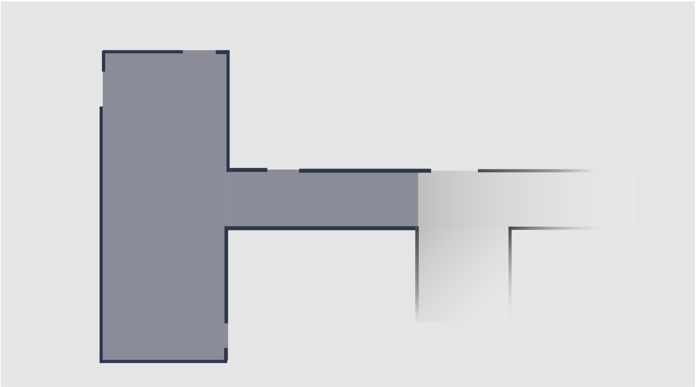
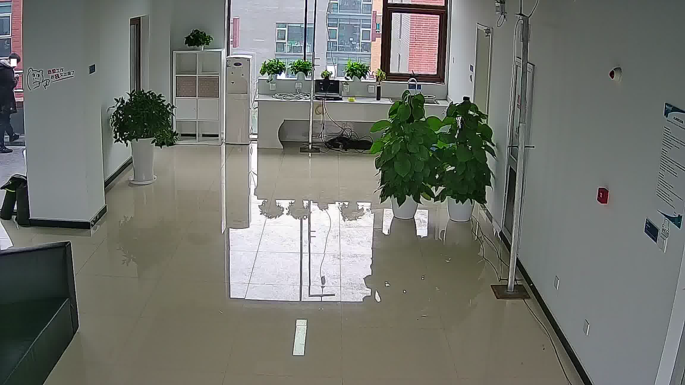
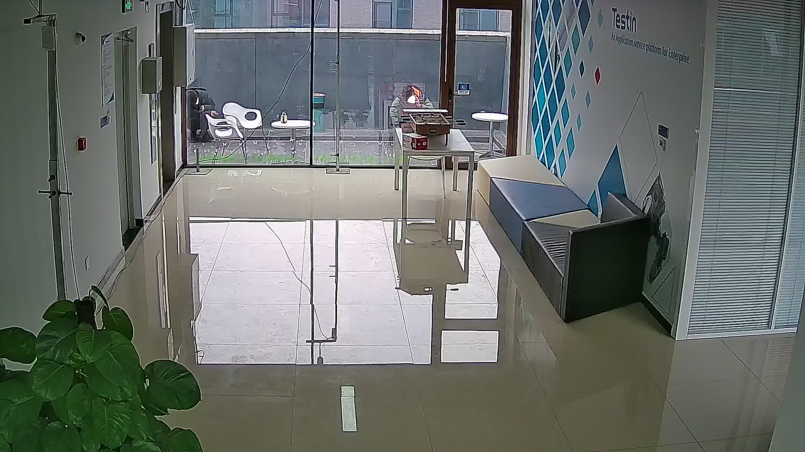
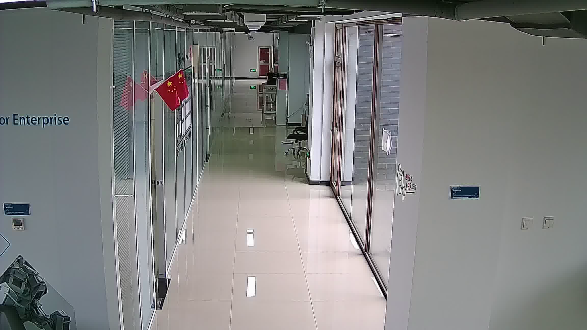
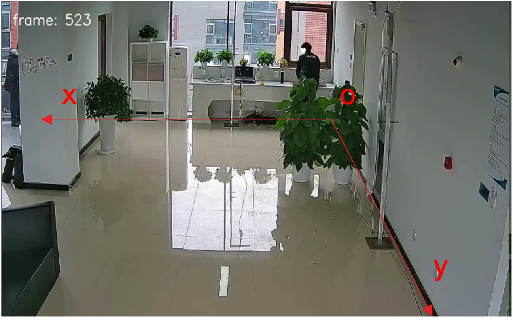
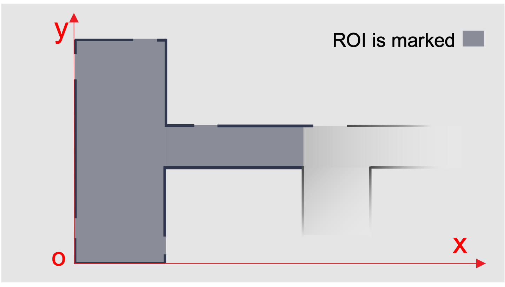

Kria™ KV260 Vision AI Starter Kit Aibox-Dist Tutorial |
Setting up the Board and Application Deployment |
Setting up the Board and Application Deployment¶
Introduction¶
This document shows how to set up the board and run the aibox-dist application.
This guide and its prebuilt are targeted for Ubuntu 22.04 and Xilinx 22.1 toolchain.
Setting up the Board¶
The aibox-dist application requires one KV260 starter kit as the surveillance center (the client) and one to four KV260 starter kits as the distributed camera (the server).
Setting up the Board for Distributed Camera¶
Please refer to Setting up the Board for Kria™ KV260 Vision AI Starter Kit Smart Camera and follow instructions until kv260-smartcam firmware has been loaded.
Setting up the Board for Surveillance Center Cross Tracking and Monitoring¶
Please refer to Setting up the Board for Kria™ KV260 Vision AI Starter Kit Smart Camera AIBox-ReID Tutorial and follow instructions until kv260-aibox-reid firmware has been loaded.
Docker based application preparation¶
The 2 kinds of boards both need the same application package docker.
Pull the latest docker image for aibox-dist using the below command.
docker pull xilinx/aibox-dist:latest
Launch the docker using the below command
docker run \ --env="DISPLAY" \ -h "xlnx-docker" \ --env="XDG_SESSION_TYPE" \ --net=host \ --privileged \ --volume="$HOME/.Xauthority:/root/.Xauthority:rw" \ -v /tmp:/tmp \ -v /dev:/dev \ -v /sys:/sys \ -v /etc/vart.conf:/etc/vart.conf \ -v /lib/firmware/xilinx:/lib/firmware/xilinx \ -v /run:/run \ -it xilinx/aibox-dist:latest bash
It will launch the aibox-dist image in a new container
root@xlnx-docker/#
The storage volume on the SD card is limited with multiple dockers. You can use following command to remove the existing container.
docker rmi --force <installed container> #Example: docker rmi --force xilinx/aibox-dist:latest
Camera Setup and Calibration for The Tracking Algorithm¶
Cross camera tracking algorithm needs some info of the monitoring region and the relation to the position/view of the capturing cameras. This section will guide the user to set it up.
The config file and demo videos
The config file shipped with the application config/cam_setup.json is calibrated for the three demo video files at following location.
{
"floorplan": [
{"x": 0,"y": 0},
{"x": 0,"y": 1250},
{"x": 460,"y": 1250},
{"x": 460,"y": 680},
{"x": 1167,"y": 680},
{"x": 1167,"y": 440},
{"x": 460,"y": 440},
{"x": 460,"y": 0}
],
"camsres": {"w": 2304, "h":1296},
"cams": [
[
{
"image": {"x": 1573, "y":323},
"plan": {"x": 0, "y":125 }
},
{
"image": {"x": 504, "y":475},
"plan": {"x": 460, "y":70 }
},
{
"image": {"x": 358, "y":707 },
"plan": {"x": 430, "y":418}
},
{
"image": {"x": 1689, "y":810},
"plan": {"x": 0, "y":480}
}
],
[
{
"image": {"x": 524, "y":476},
"plan": {"x": 0, "y":1250 }
},
{
"image": {"x": 352, "y":727},
"plan": {"x": 0, "y":890}
},
{
"image": {"x": 1274, "y":480},
"plan": {"x": 343, "y":1250}
},
{
"image": {"x": 1931, "y":973},
"plan": {"x": 460, "y":680}
}
],
[
{
"image": {"x": 651, "y":1091},
"plan": {"x": 718, "y":680}
},
{
"image": {"x": 1472, "y":1092},
"plan": {"x": 718, "y":440}
},
{
"image": {"x": 1293, "y":727},
"plan": {"x": 1167, "y":440}
},
{
"image": {"x": 775, "y":722},
"plan": {"x": 1167, "y":680}
}
]
]
}
floorplan
Array of vertices of the floorplan polygon.
In bellow example, there are 8 points.

camsres
Define the resolution of the camera view which is used in camera setup and calibration. Note This resolution need not to be 1080p which is configured for actual application running. For example, in above json example, we use “2304x1296”.
Cams
camview1  camview2  camview3 
This is an array of camera mapping.
Each element defines the mapping relation of one camera view to the floorplan. It consists of 4 pairs of corresponding floorplan point and camera view point.
Define The Floorplan ROI
Based on the Region of Interest of the monitoring camera system, define the floorplan in whatever unit.


Choose a point as origin o, set coordinate axis (x, y)
Define ROI in the plan and only pedestrian in the ROI will be tracked. For example, in camera 3, part of the corridor is very dark, so it’s not included in the ROI.
The ROI is a polygon, give the coordinates of angular points of the polygon in a clockwise direction or anti-clockwise direction so that the contour of plan map can be defined.
Mapping of Camera View and Floorplan
For each camera, give 4 points’ coordinates in both plan and camera view (the reference points should be on the ground, and any three points are not collinear)
Take camera 1 as an example,
# coordinates in camera view (unit: pixel)
Image_coords = [[1573,323], [504,475], [358,707], [1689,810]]
# coordinates in plan map (unit: cm)
Plan_coords = [[0,125], [460,70], [430,418], [0,480]]
[
{
"image": {"x": 1573, "y":323},
"plan": {"x": 0, "y":125 }
},
{
"image": {"x": 504, "y":475},
"plan": {"x": 460, "y":70 }
},
{
"image": {"x": 358, "y":707 },
"plan": {"x": 430, "y":418}
},
{
"image": {"x": 1689, "y":810},
"plan": {"x": 0, "y":480}
}
]
Jupyter notebook to help interactively mark the points on the captured images and get the json section¶
User need to run following command to install the package shipped notebooks which reside in
/opt/xilinx/kv260-aibox-dist/share/notebooksto the folder/root/notebooks/aibox-dist.$ aibox-dist-install.pyThis script also provides more options to install the notebook of current application to specified location.
usage: aibox-dist-install [-h] [-d DIR] [-f] Script to copy aibox-dist Jupyter notebook to user directory optional arguments: -h, --help show this help message and exit -d DIR, --dir DIR Install the Jupyter notebook to the specified directory. -f, --force Force to install the Jupyter notebook even if the destination directory exists.
Please get the list of running Jupyter servers with command:
$ jupyter-server listOutput example:
Currently running servers:
http://ip:port/?token=xxxxxxxxxxxxxxxxxx:: /root/notebooks/aibox-distStop the currently running server with command:
$ jupyter-server stop 8888To launch Jupyter notebook on the target, run below command.
jupyter-lab --notebook-dir=/root/notebooks/aibox-dist --allow-root --ip=ip-address &
// fill in ip-address from ifconfig, eth0
Output example:
[I 2022-09-05 10:26:26.644 LabApp] JupyterLab extension loaded from /usr/local/lib/python3.10/dist-packages/jupyterlab
[I 2022-09-05 10:26:26.644 LabApp] JupyterLab application directory is /usr/local/share/jupyter/lab
[I 2022-09-05 10:26:26.664 ServerApp] jupyterlab | extension was successfully loaded.
[I 2022-09-05 10:26:26.683 ServerApp] nbclassic | extension was successfully loaded.
[I 2022-09-05 10:26:26.685 ServerApp] Serving notebooks from local directory: /root/notebooks/aibox-dist
[I 2022-09-05 10:26:26.685 ServerApp] Jupyter Server 1.18.1 is running at:
[I 2022-09-05 10:26:26.685 ServerApp] http://192.168.1.233:8888/lab?token=385858bbf1e5541dbba08d811bcac67d805b051ef37c6211
[I 2022-09-05 10:26:26.686 ServerApp] or http://127.0.0.1:8888/lab?token=385858bbf1e5541dbba08d811bcac67d805b051ef37c6211
[I 2022-09-05 10:26:26.686 ServerApp] Use Control-C to stop this server and shut down all kernels (twice to skip confirmation).
[W 2022-09-05 10:26:26.702 ServerApp] No web browser found: could not locate runnable browser.
[C 2022-09-05 10:26:26.703 ServerApp]
To access the server, open this file in a browser:
file:///root/.local/share/jupyter/runtime/jpserver-40-open.html
Or copy and paste one of these URLs:
http://192.168.1.233:8888/lab?token=385858bbf1e5541dbba08d811bcac67d805b051ef37c6211
or http://127.0.0.1:8888/lab?token=385858bbf1e5541dbba08d811bcac67d805b051ef37c6211
User can access the server by opening the server URL from previous steps with the Chrome browser.
After open the notebook, you can define the RTSP server IP and follow the steps described in notebook, first you can get a interactive window with the captured image from RTSP server, you can click on the image to mark the point you would like to used for “image” to “plan” mapping. Finally you can run the cell to get a json snippet with the “image” fields filed with real coordinates you marked on the image and “plan” field filled with “todo” which you need to update yourself.
example output of the notebook:
json [ { "image": {"x": 1573, "y":323}, "plan": {"x": todo, "y":todo } }, { "image": {"x": 504, "y":475}, "plan": {"x": todo, "y":todo } }, { "image": {"x": 358, "y":707 }, "plan": {"x": todo, "y":todo } }, { "image": {"x": 1689, "y":810}, "plan": {"x": todo, "y":todo } } ]
How to Run The Application¶
As described in Software Architecture of the Application, this application consists of up to 4 server side image capturing boards with camera, and 1 client side monitoring board. So accordingly there are different binary executable to be run on server or client.
Start The Server Application¶
Examples¶
This example starts capturing by using the MIPI camera as input source.
aibox-dist-cam -m
You can also start the streaming by using video files as the input source, actually, this is the recommended mode to start with.
aibox-dist-cam -f cros.1.1080.h264
Note: Only one instance of aibox-dist-cam application can run at a time because it requires exclusive access to a DPU engine and there is only one instance of DPU that exists in the aibox-cam platform.
Command Options¶
The example shows a simple way to invoke the server application.
User can get more and detailed application options as following by invoking
aibox-dist-cam --help
Usage:
aibox-dist-cam [OPTION?] - Application for facedetion detction on SoM board of Xilinx.
Help Options:
-h, --help Show help options
--help-all Show all help options
--help-gst Show GStreamer Options
Application Options:
-m, --mipi= use MIPI camera as input source, auto detect, fail if no mipi connected
-u, --usb=media ID usb camera media device id, e.g. 0 for /dev/media0
-f, --file=file path location of h26x file as input
-i, --infile-type=h264 input file type: [h264 | h265]
-W, --width=1920 resolution w of the input
-H, --height=1080 resolution h of the input
-r, --framerate=30 framerate of the input
-c, --camid=0 cam ID
-l, --fileloop=loop file source loop file source
-o, --outmedia-type=h264 output file type: [h264 | h265]
-p, --port=554 Port to listen on (default: 554)
-R, --report report fps
--ROI-off turn off ROI
--control-rate=low-latency Encoder parameter control-rate
--target-bitrate=3000 Encoder parameter target-bitrate
--gop-length=60 Encoder parameter gop-length
--profile Encoder parameter profile.
--level Encoder parameter level
--tier Encoder parameter tier
--encodeEnhancedParam String for fully customizing the encoder in the form "param1=val1, param2=val2,...", where paramn is the name of the encoder parameter
Start The Client Application¶
Command Line¶
Examples¶
aibox-dist-monitor -s rtsp://address-of-cam-1 -s rtsp://address-of-cam-2 -S 1
Note Above example is for live steam capturing from camera, if you are starting with the video file streaming way which we recommended as a start point, please remove the option “-S 1” as.
aibox-dist-monitor -s rtsp://address-of-cam-1 -s rtsp://address-of-cam-2
Note: Only one instance of aibox-dist-monitor application can run at a time because it requires exclusive access to a DPU engine and there is only one instance of DPU that exists in the aibox-monitor platform.
Command Options¶
User can get more and detailed application options as following by invoking
aibox-dist-monitor --help
Usage:
aibox-dist-monitor [OPTION?] - AI Application of pedestrian + reid + tracking for multi RTSP streams, on SoM board of Xilinx.
Help Options:
-h, --help Show help options
--help-all Show all help options
--help-gst Show GStreamer Options
Application Options:
-s, --src=[rtsp://server:port/id |file path] URI of rtsp src, or location of h264|h265 video file. Must set. Can set up to 4 times
-S, --syncType Sync Type: 0: Sync for file based stream; 1: Sync for live stream
-I, --indTol Tolerance value used by syncType 0: number of frame
-T, --timeTol Tolerance value used by syncType 1: microsecond
-e, --srcenc=[h264|h265] Encoding type of the input source. Optional. Can set up to 4 times.
-p, --pos=[0|1|2|3] Location of the display in the 4 grids of 4k monitor. Optional. 0: top left, 1: top right, 2: bottom left, 3: bottom right. Optional. Can set up to 4 times.
-r, --framerate=auto Framerate of the input. Optional. Can set up to 4 times.
-R, --report Report fps
-c, --config=/opt/xilinx/kv260-aibox-dist/share/vvas/cam_setup.json System calibration json file path
Files structure¶
The application is installed as:
Binary File Directory: /opt/xilinx/kv260-aibox-dist/bin
| filename | description |
|---|---|
| aibox-dist-cam | app for camera board |
| aibox-dist-monitor | app for monitor board |
Configuration file directory: /opt/xilinx/kv260-aibox-dist/share/vvas
| filename | description |
|---|---|
| cam_setup.json | Config of camera set up and calibration. |
| ped_pp.json | Config of refinedet preprocess. |
| refinedet.json | Config of refinedet. |
| crop.json | Config of cropping for reid. |
| reid.json | Config of reid. |
Next Steps¶
Go back to the KV260 SOM AIBox-Dist design start page
License¶
Licensed under the Apache License, Version 2.0 (the “License”); you may not use this file except in compliance with the License.
You may obtain a copy of the License at http://www.apache.org/licenses/LICENSE-2.0
Unless required by applicable law or agreed to in writing, software distributed under the License is distributed on an “AS IS” BASIS, WITHOUT WARRANTIES OR CONDITIONS OF ANY KIND, either express or implied. See the License for the specific language governing permissions and limitations under the License.
Copyright© 2021 Xilinx